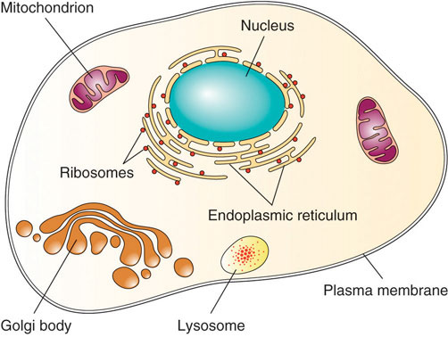

What distinguishes a living organism from an inanimate object? A living organism conducts self-sustaining biological processes. A cell is the smallest and most basic form of life. Robert Hooke, one of the first scientists to use a light microscope, discovered the cell in 1665. In all life forms, including bacteria, plants, animals, and humans, the cellBasic structural and functional unit of all life. was defined as the most basic structural and functional unit. Based on scientific observations over the next 150 years, scientists formulated the cell theoryCells are the most basic building units of life, all living things are composed of cells, and new cells are made from preexisting cells, which divide into two., which is used for all living organisms no matter how simple or complex. The cell theory incorporates three principles:
Who you are has been determined because of two cells that came together inside your mother’s womb. The two cells containing all of your genetic information (DNA) united to begin making new life. Cells divided and differentiated into other cells with specific roles that led to the formation of the body’s numerous body organs, systems, blood, blood vessels, bone, tissue, and skin. As an adult, you are comprised of trillions of cells. Each of your individual cells is a compact and efficient form of life—self-sufficient, yet interdependent upon the other cells within your body to supply its needs.
Independent single-celled organisms must conduct all the basic processes of life: it must take in nutrients (energy capture), excrete wastes, detect and respond to its environment, move, breathe, grow, and reproduce. Even a one-celled organism must be organized to perform these essential processes. All cells are organized from the atomic level to all its larger forms. Oxygen and hydrogen atoms combine to make the molecule water (H2O). Molecules bond together to make bigger macromolecules. The carbon atom is often referred to as the backbone of life because it can readily bond with four other elements to form long chains and more complex macromolecules. Four macromolecules—carbohydrates, lipids, proteins, and nucleic acids—make up all of the structural and functional units of cells.
Although we defined the cell as the “most basic” unit of life, it is structurally and functionally complex (see Figure 3.1). A cell can be thought of as a mini-organism consisting of tiny organs called organelles. The organellesA structural or functional unit in a cell that is constructed from several macromolecules bonded together. are structural and functional units constructed from several macromolecules bonded together. A typical animal cell contains the following organelles: the nucleus (which houses the genetic material DNA), mitochondria (which generate energy), ribosomes (which produce protein), the endoplasmic reticulum (which is a packaging and transport facility), and the golgi apparatus (which distributes macromolecules). In addition, animal cells contain little digestive pouches, called lysosomes and peroxisomes, which break down macromolecules and destroy foreign invaders. All of the organelles are anchored in the cell’s cytoplasm via a cytoskeleton. The cell’s organelles are isolated from the surrounding environment by a plasma membrane.
Figure 3.1
The cell is structurally and functionally complex.
Discovery Video: Cells
(click to see video)This video describes the importance of cells in the human body.
Unicellular (single-celled) organisms can function independently, but the cells of multicellular organisms are dependent upon each other and are organized into five different levels in order to coordinate their specific functions and carry out all of life’s biological processes.
Table 3.1 The Eleven Organ Systems in the Human Body and Their Major Functions
| Organ System | Organ Components | Major Function |
|---|---|---|
| Circulatory | heart, blood/lymph vessels, blood, lymph | Transport nutrients and waste products |
| Digestive | mouth, esophagus, stomach, intestines | Digestion and absorption |
| Endocrine | all glands (thyroid, ovaries, pancreas) | Produce and release hormones |
| Immune | white blood cells, lymphatic tissue, marrow | Defend against foreign invaders |
| Integumentary | skin, nails, hair, sweat glands | Protective, body temperature regulation |
| Muscular | skeletal, smooth, and cardiac muscle | Body movement |
| Nervous | brain, spinal cord, nerves | Interprets and responds to stimuli |
| Reproductive | gonads, genitals | Reproduction and sexual characteristics |
| Respiratory | lungs, nose, mouth, throat, trachea | Gas exchange |
| Skeletal | bones, tendons, ligaments, joints | Structure and support |
| Urinary | kidneys, bladder, ureters | Waste excretion, water balance |
Energy is required in order to build molecules into larger macromolecules, and to turn macromolecules into organelles and cells, and then turn those into tissues, organs, and organ systems, and finally into an organism. Proper nutrition provides the necessary nutrients to make the energy that supports life’s processes. Your body builds new macromolecules from the nutrients in food.
Energy is stored in a nutrient’s chemical bonds. Energy comes from sunlight, which plants then capture and, via photosynthesis, use it to transform carbon dioxide in the air into the molecule, glucose. When the glucose bonds are broken, energy is released. Bacteria, plants, and animals (including humans) harvest the energy in glucose via a biological process called cellular respirationThe process by which the stored chemical energy in nutrients is transformed into cellular energy.. In this process the chemical energy of glucose is transformed into cellular energy in the form of the molecule, adenosine triphosphate (ATP). Cellular respiration requires oxygen (aerobic) and it is provided as a waste product of photosynthesis. The waste products of cellular respiration are carbon dioxide (CO2) and water, which plants use to conduct photosynthesis again. Thus, energy is constantly cycling between plants and animals. As energy is consumed nutrients are recycled within it.
Plants harvest energy from the sun and capture it in the molecule, glucose. Humans harvest the energy in glucose and capture it into the molecule, ATP.
In this section, we have learned that all life is composed of cells capable of transforming small organic molecules into energy. How do complex organisms such as humans convert the large macromolecules in the foods that we eat into molecules that can be used by cells to make cellular energy? In the next section, we will discuss the physiological process of digestion to answer this question.